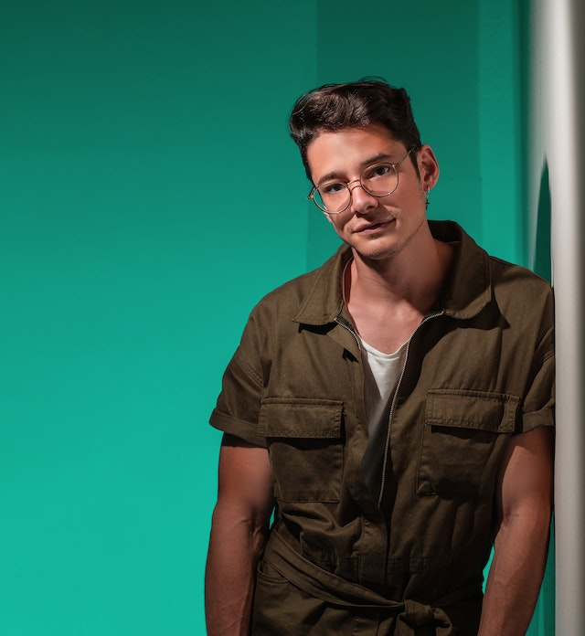

Nakufanyia mzaha
Web Developer
Desde 2004 tengo experiencia en el área del desarrollo web y la educación. Imparto clases, conferencias
y capacitaciones para personas, empresas, instituciones educativas y comunidades en Internet.
También colaboro en proyectos como Freelance FullStack.
Estoy más orientado al Frontend, pero también hago Backend.
Estoy más orientado al Frontend, pero también hago Backend.
Disfruto llevar a cabo la maquetación e interactividad de
interfaces web, así como la optimización, para el buen
posicionamiento y el rendimiento de carga de sitios y
aplicaciones web.
interfaces web, así como la optimización, para el buen
posicionamiento y el rendimiento de carga de sitios y
aplicaciones web.
También cuento con experiencia en el área de Social Media, Marketing de Contenidos y SEO.

Mis habilidades
Desarrollo Web
90%
Diseño Web
85%
WPO y SEO
80%
Desarrollo Web y Backend
75%
Social Media y Marketing de Contenidos
60%